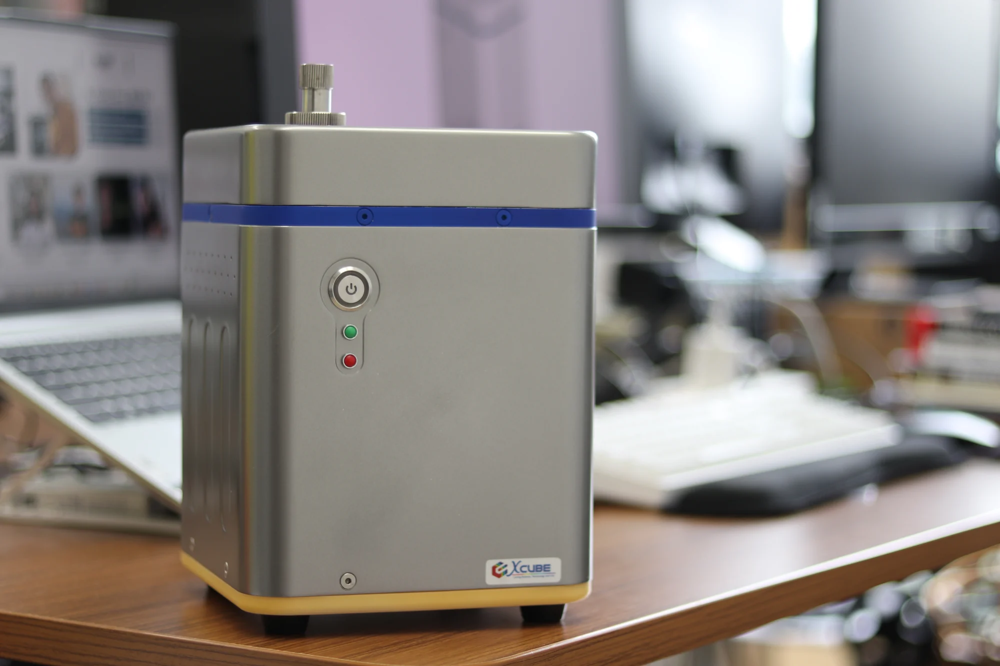
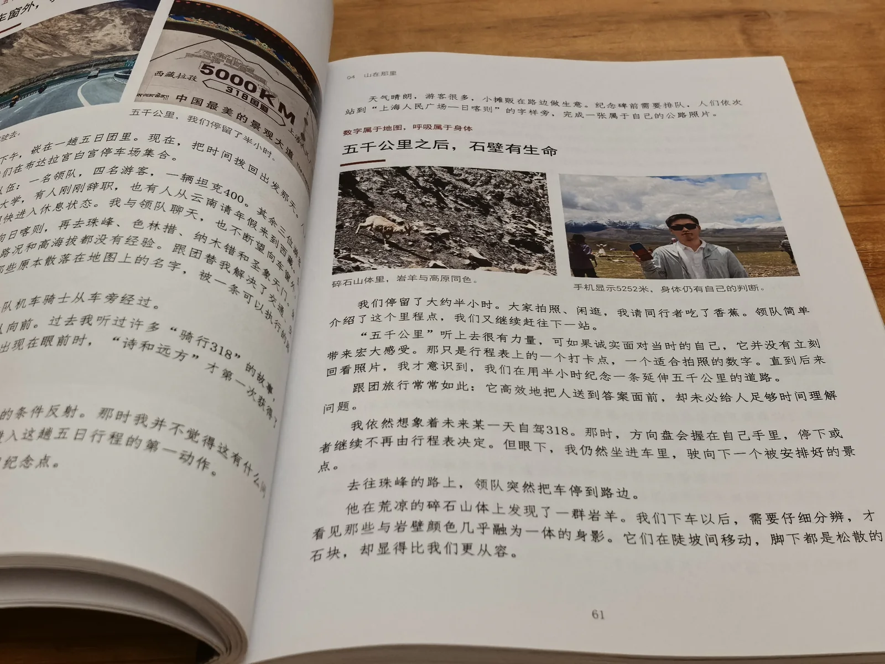

AI × 产品原型
做出软硬结合、能够现场演示的原型或教具，用真实体验说明 AI 如何解决问题。
AI · 教育 · 写作 · 人文科技
在技术与人文之间，用 AI 把复杂知识变成可理解、可体验、可使用的作品。
中国科学院大学计算机硕士，培养于中国科学院深圳先进技术研究院；前华为 AI 算法工程师，拥有四年大厂经验与七年 AI 研究、工程及产品实践。现探索 AI 教育、写作与人文科技。

我的工作方式
我相信技术应当向善，也应当有温度。我关心的不只是模型能做什么，更关心技术最终为谁服务：知识能否被真正理解，想法能否变成可体验、可使用的产品，人的感受、成长与选择能否被认真对待，技术最终能否为个体与社会带来真实、长期的价值。
代表作品与实践
从科研仪器、终端产品到写作与 AI 教育，我持续把技术和想法做成可以交付、使用与验证的成果。
查看完整作品档案
完成泵阀控制、激光与相机采集控制系统开发，构建 32 类、40 万+张浮游植物图像数据集，开发分类与目标检测算法，并完成 NVIDIA Jetson TX2 嵌入式集成。整套系统搭载科考船开展海上科考，为赤潮等海洋生态灾害的监测与预警提供技术支撑。成果发表于 OCEANS 2022，并申请发明专利 1 项。
32 类数据集 · 40 万+张图像 · OCEANS 2022 · 发明专利申请查看项目
推动人体感知、运动健康算法进入华为终端产品，并参与 DeepSeek V3 / R1 在昇腾 NPU 与 CloudMatrix 384 上的部署和推理优化。
V5 Pro / Watch 系列 · DeepSeek V3 / R1 · CloudMatrix 384 · HDC 2025查看产业实践
以九个章节写下经青藏铁路进入拉萨，再到日喀则、珠峰、藏北与纳木措的见闻，也留下对珍惜、在场与“随缘不执”的理解。
9 个章节 · 158 页 · 5 万字 · 摄影与写作阅读书籍介绍
以 AI 教育为现阶段主线，探索 AI+硬件/玩具、AI+书籍等方向，用产品原型、公开作品与真实反馈逐步验证。
AI 教育 · AI+硬件/玩具 · AI+书籍 · MVP 验证查看当前探索我的路径
在科研中探寻深度，在工业界锻造真实落地的系统。现在的我，选择用自己的审美与判断定义命题，将工程能力沉淀为具体的作品。
查看完整经历在中国科学院深圳先进技术研究院，完成泵阀流体操控与激光控制、32 类浮游植物数据集构建、分类与目标检测算法开发，以及 NVIDIA Jetson TX2 嵌入式系统集成。成果发表于 OCEANS 2022，并申请发明专利。
组建“蓝色海岸线”团队，主导 FluoSieve® Counter 原型研制并担任主要答辩者。作品将光机结构、流体控制与嵌入式 AI 结合，实现细胞样品自动计数，并获深圳特区报、广州日报等多家媒体报道。
轻量级人体感知算法首发商用于华为智慧屏 V5 Pro；卡路里算法上线 HUAWEI Watch GT 系列、手环与 Fit；运动心血管风险评估模型上线 HUAWEI Watch D2。
参与 DeepSeek V3 / R1 在昇腾 NPU 集群与 HUAWEI CloudMatrix 384 超节点上的部署与优化，主导 NPU 侧性能优化、FA 算子改进及算子级仿真能力建设，推动单卡 Decode 达到约 2300+ tokens/s；相关成果在 HDC 2025 展示。
以九个章节写下从西安、西宁，经青藏铁路进入拉萨，再到日喀则、珠峰、藏北与纳木措的见闻。158 页的摄影与文字，也留下对珍惜、在场与“随缘不执”的理解。
总体方向是探索 AI+ 的真实场景，现阶段以 AI 教育为主线，并延伸至 AI+硬件/玩具与 AI+书籍；通过原型、公开作品和真实用户反馈持续验证。
我怎样理解 AI
从 2019 年开始研究 AI，我看着它从解决单一识别任务，发展到理解语言、调用工具、参与完整工作流。技术变化很快，但模型不能替我决定什么值得做。人的价值观、真实经验与选择，仍然是作品的核心。
我更关心 AI 怎样进入教育、写作和产品：让复杂知识更容易被理解，让一个想法更快变成可以使用、讨论和验证的东西。
阅读我的 AI 思考NOW · 2026
AI 已经显著放大个人能力，下一步更重要的变化，是进入企业与组织的知识、流程和决策。只有真正嵌入业务、被人理解和使用，AI 才能转化为持续的生产力。
查看当前计划做出软硬结合、能够现场演示的原型或教具，用真实体验说明 AI 如何解决问题。
用写作推动系统学习，建立自己的 AI 知识框架，并形成可以公开传播与持续迭代的作品。
把原型、书籍和课程带入真实学习与组织场景，验证 AI 如何从个人工具转化为协作与生产力。
关于与联系
我愿意认识对 AI、教育、人文、写作和产品创造抱有长期兴趣的人。无论是一项值得验证的想法，一次跨领域合作，还是一场深入交流，都欢迎联系。
了解更多